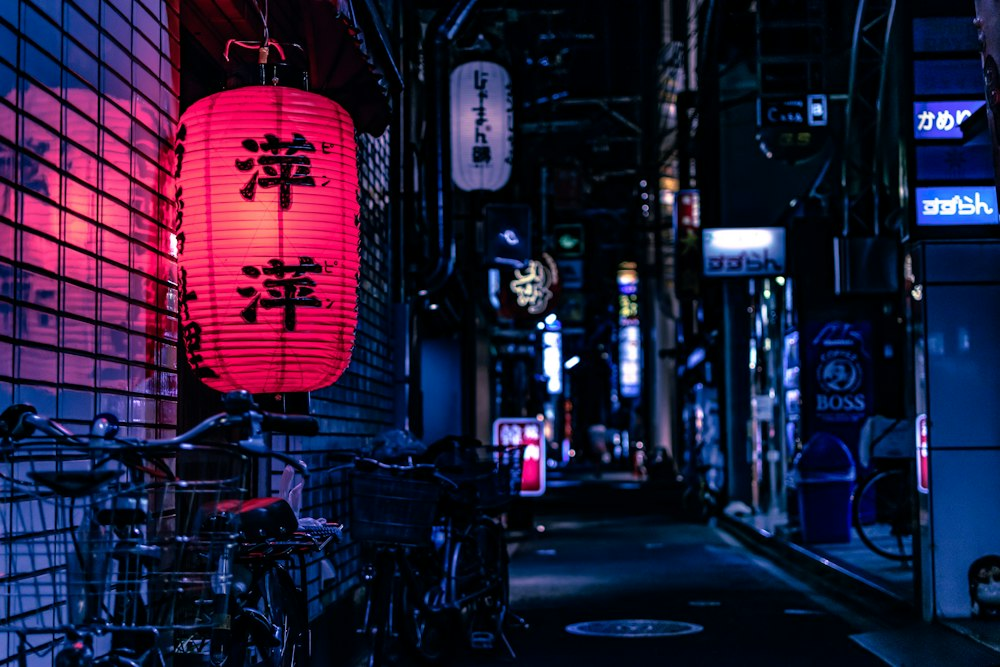
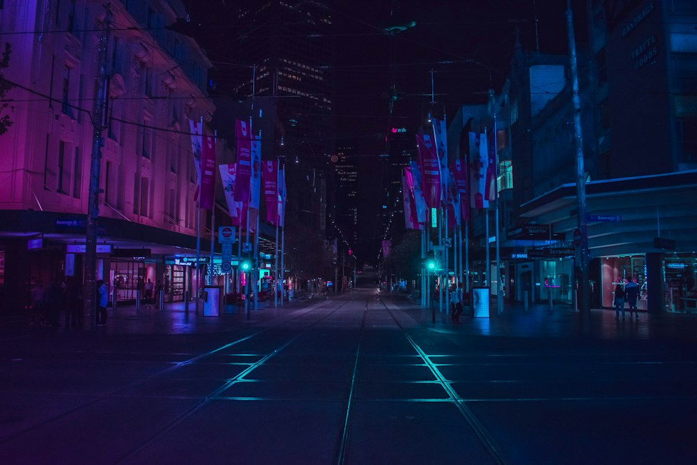

Tokyo
Where ancient temples meet neon-lit streets.
One city.
A thousand little worlds.
Tokyo is a city of contrasts — a place where centuries-old shrines sit in the shadow of soaring skyscrapers, where Michelin-starred sushi bars share streets with bustling ramen stalls, and where cutting-edge technology coexists with deeply rooted tradition. With 14 million residents, the world's largest metropolitan area offers endless discovery.


Must-see. Must-feel.
Must-see attractions · Editorial photography; prices and locations are illustrative planning information.
Your Tokyo, at your pace.
Stay somewhere that feels like you.
A little local
knowledge goes
a long way.
Insider tips from our travel experts, for a smoother, more connected trip.
Find your perfect season.
Select a month to explore ↓
Green: best · Gold: good · Orange: hot/rainy · Blue: cold. Approximate monthly averages.
Tokyo leaves an impression.
Illustrative traveler stories
Ready to explore Tokyo?
Our travel experts will craft a personalized itinerary just for you.
From $2,899/person · 7 days · Flights + Hotels + Experiences